Úvod do vzhledu materiálů ANI-PG2 · přednáška 01
Jiří Filip · ÚTIA AV ČR
Od skutečného materiálu k digitálnímu modelu Motivace, základní reprezentace vzhledu a jejich omezení. Odborné pojmy a jazyk zdrojových snímků zůstávají zachované.
Původní snímek · 1 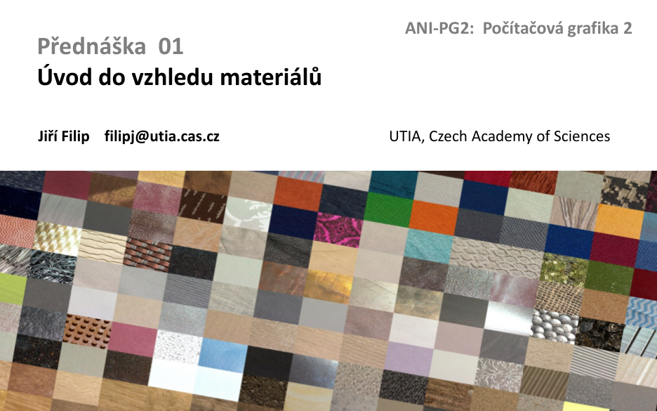
Jiří Filip · datum podkladu neuvedeno · PDF, strana 1
Motivation Material appearance is part of how we understand the world.
Původní snímek · 2 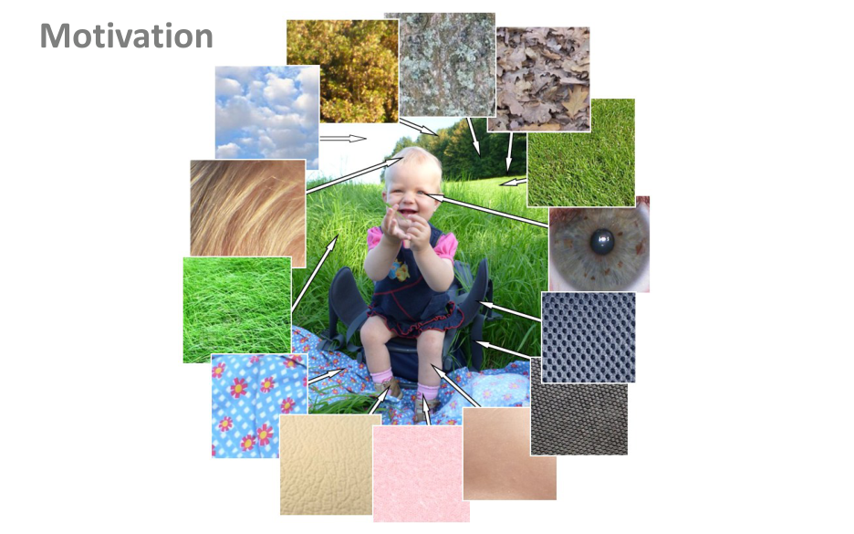
Jiří Filip · datum podkladu neuvedeno · PDF, strana 2
Accurate appearance: measurement and visualization Visual scene analysis, scene segmentation and image retrieval. Movie and game industry; cultural heritage digitization and interior design. Visual safety simulation, visual psychophysics and medical image analysis. Původní snímek · 3 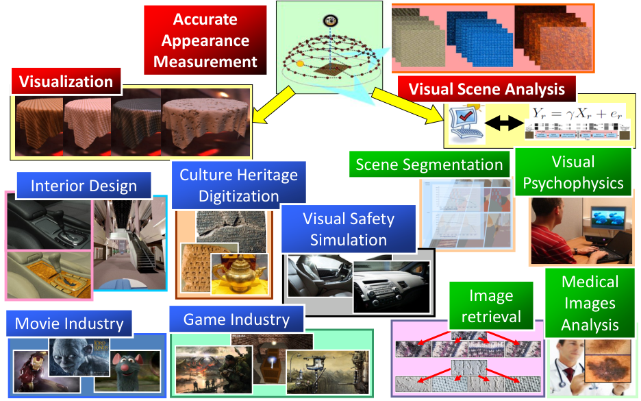
Jiří Filip · datum podkladu neuvedeno · PDF, strana 3
Digital twin of a real-world material Geometry describes the shape. Lighting determines the incident illumination. Material appearance determines the light–material interaction. GRAFIT · kontrolní otázka Může změna osvětlení změnit obraz stejného materiálu, i když geometrie zůstává stejná?
Původní snímek · 4 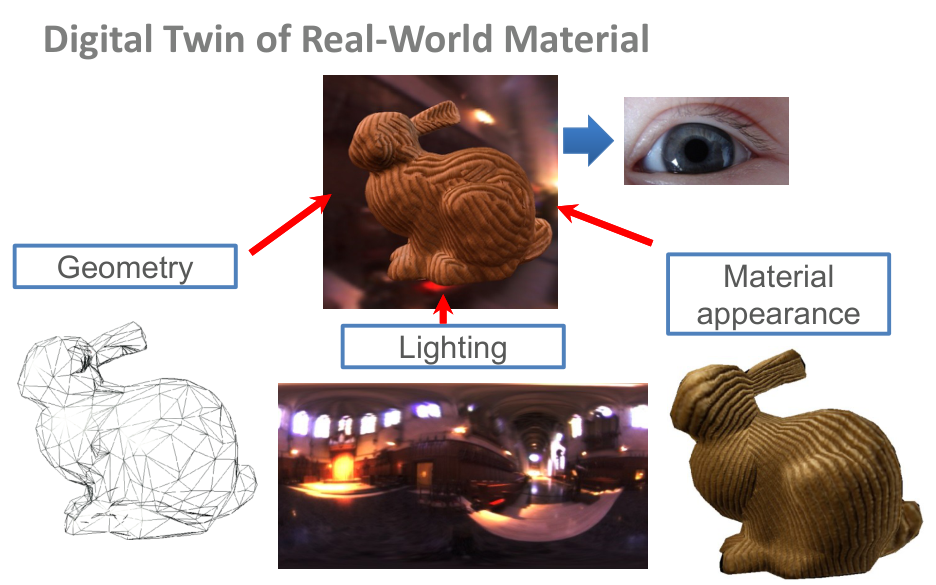
Jiří Filip · datum podkladu neuvedeno · PDF, strana 4
General reflectance function The general model connects incoming and outgoing positions and directions, time and wavelength.
Source notation includes a 16-dimensional general reflectance function. The complete equation and its diagram remain in the source illustration.
Původní snímek · 5 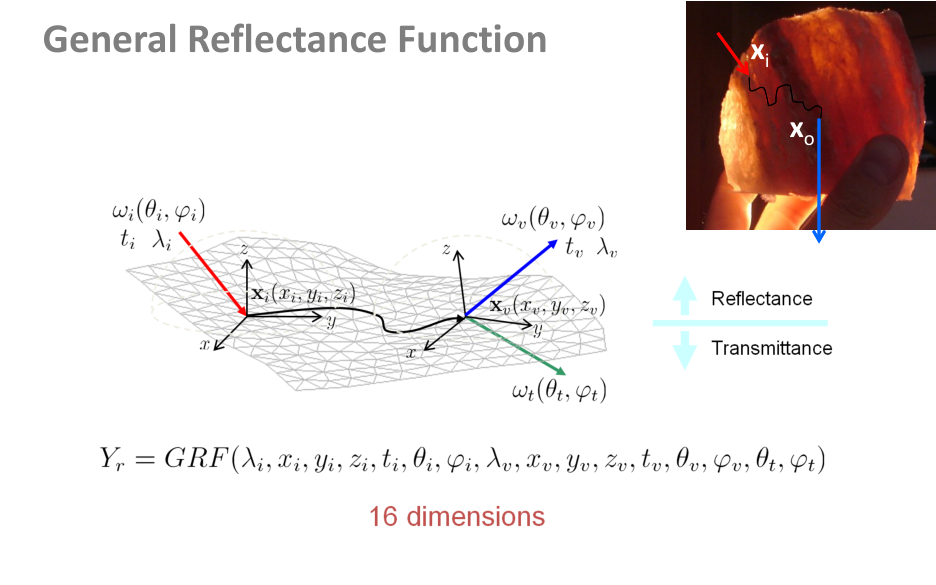
Jiří Filip · datum podkladu neuvedeno · PDF, strana 5
General model of light–material interaction BSSRDF: scattering may involve different entry and exit positions. BTF: directional appearance of a textured material. BRDF: directional reflection for a local opaque surface model. Původní snímek · 6 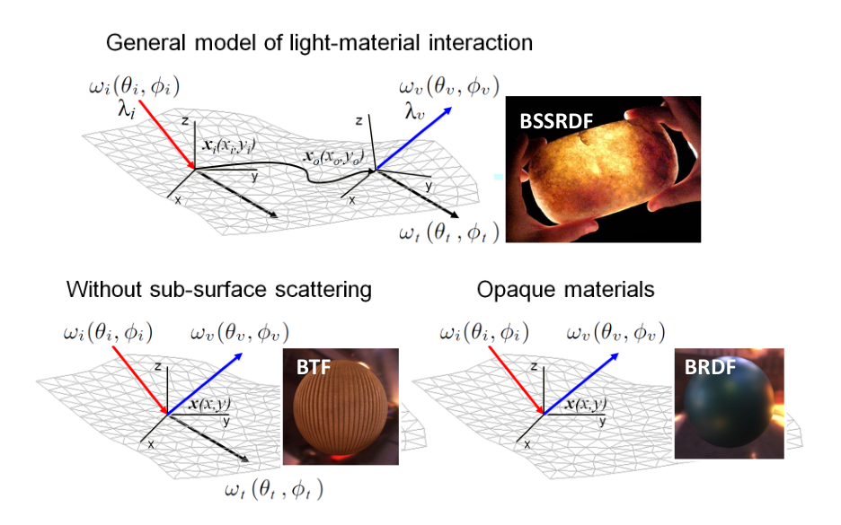
Jiří Filip · datum podkladu neuvedeno · PDF, strana 6
Taxonomy of appearance representations Texture and multispectral/dynamic texture. Isotropic BRDF, BRDF, BTDF and BSDF for homogeneous materials. Spatially varying BRDF, BTF, surface light field and surface reflectance field. Reflectance fields / BSSRDF. Rozměry ve zdroji Počty proměnných závisí na konkrétní parametrizaci. Diagram zachovává autorskou taxonomii včetně spektrální a časové závislosti.
Původní snímek · 7 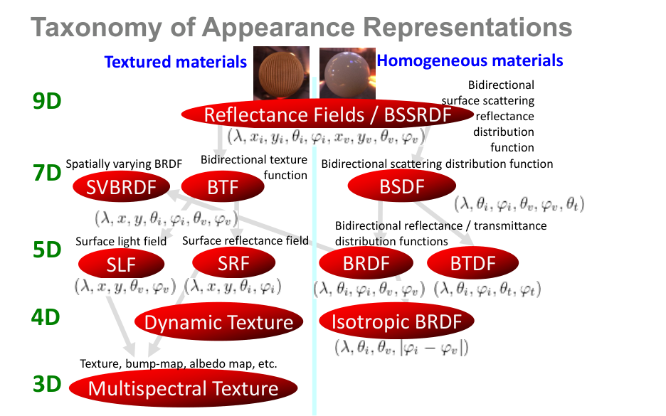
Jiří Filip · datum podkladu neuvedeno · PDF, strana 7
Textured material representation · 1/2 BSSRDF: 9D in the source convention. BTF / SVBRDF: 7D in the source convention. BRTTF: 9D in the source convention. Původní snímek · 8 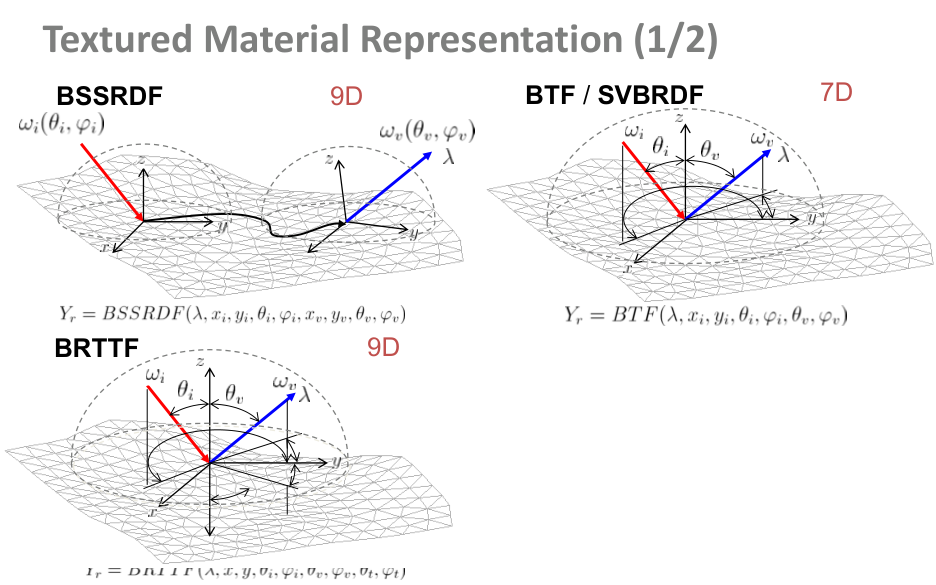
Jiří Filip · datum podkladu neuvedeno · PDF, strana 8
Textured material representation · 2/2 SRF and SLF: 5D in the source convention. Multispectral / dynamic texture: 3/4D in the source convention. Původní snímek · 9 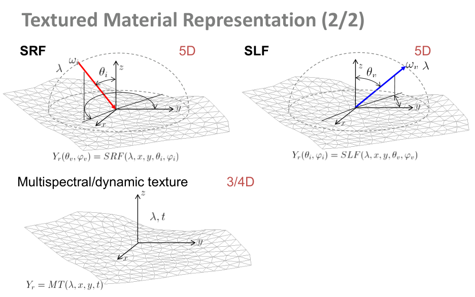
Jiří Filip · datum podkladu neuvedeno · PDF, strana 9
Homogeneous material representations BSDF: 7D; anisotropic BTDF: 5D. Anisotropic BRDF: 5D; isotropic BRDF: 4D. Parametrizace Zdrojové rozměry zahrnují další proměnné podle autorských diagramů; neztotožňuj je automaticky s počtem čistě úhlových parametrů.
Původní snímek · 10 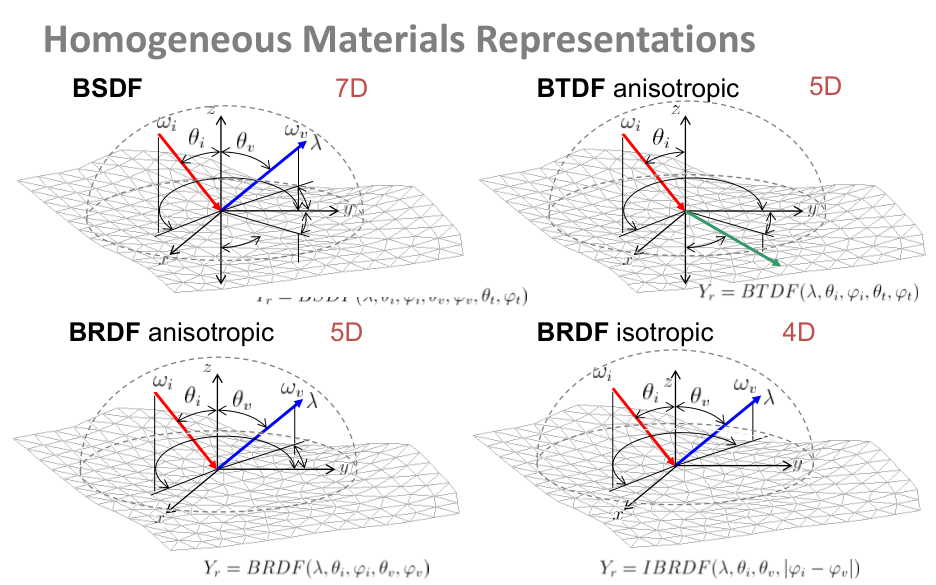
Jiří Filip · datum podkladu neuvedeno · PDF, strana 10
Examples of material representations Compare BRDF, BSDF, BTF, BTDF and BSSRDF through the author’s examples.
Původní snímek · 11 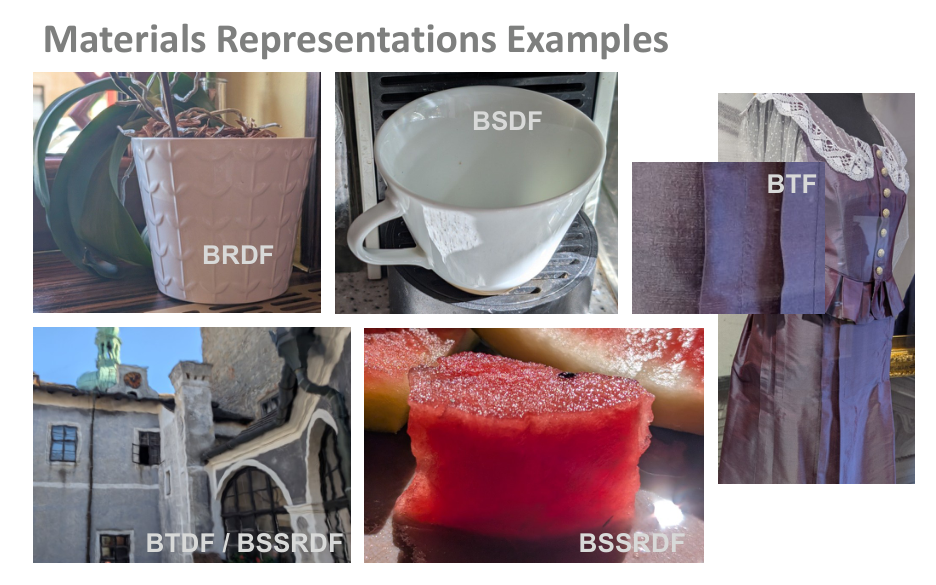
Jiří Filip · datum podkladu neuvedeno · PDF, strana 11
Appearance rendering Total outgoing radiance consists of emitted and reflected radiance:
Lo (x, ωo ) = Le (x, ωo ) + Lr (x, ωo )
Lr (x, ωo ) = ∫Ω⁺ fr (x, ωi , ωo ) Li (x, ωi ) (n · ωi ) dωi
Surface reflectance × incident illumination × projected area, integrated over incoming directions.
GRAFIT · značení Standardní HTML zápis používá fᵣ pro BRDF. Zdroj používá BRDF a své značení; původní rovnice je v poznámkách a ilustraci.
Interaktivní ukázka GRAFIT Původní snímek · 12 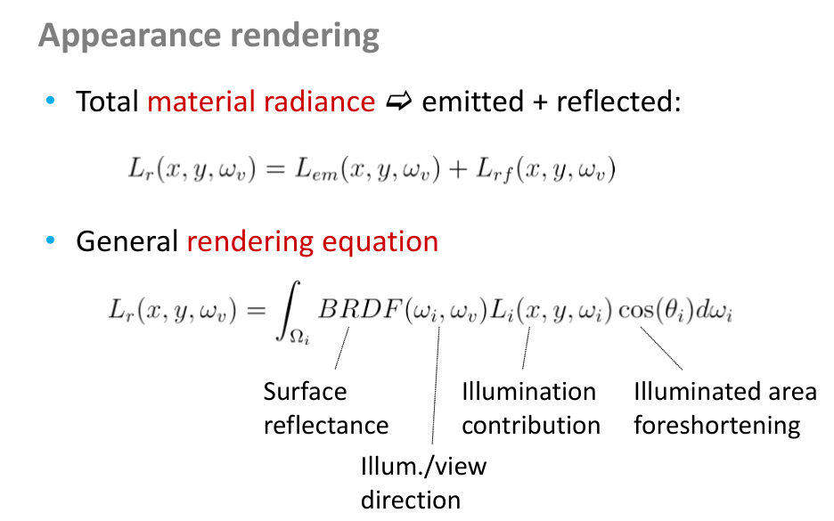
Jiří Filip · datum podkladu neuvedeno · PDF, strana 12
Material visualization Global illumination: ray tracing approaches. Approximation by a set of point lights. Původní snímek · 13 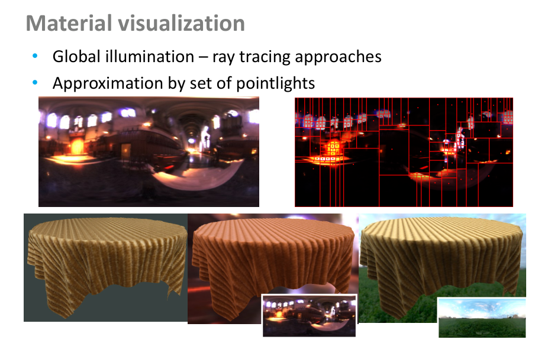
Jiří Filip · datum podkladu neuvedeno · PDF, strana 13
Radiometry Irradiance E = dΦ / dA, in W m⁻². Radiance L = d²Φ / (dA cos θ dω), in W m⁻² sr⁻¹. BRDF fᵣ = dLₒ / dEᵢ, in sr⁻¹. Directional albedo integrates reflected energy over outgoing directions. Mean albedo averages directional albedo over incident directions. GRAFIT · pomůcka Irradiance popisuje osvětlení plochy; radiance navíc rozlišuje směr. Jednotky jsou vysvětlující doplněk, úplné autorské vzorce jsou zachované v ilustraci.
Původní snímek · 14 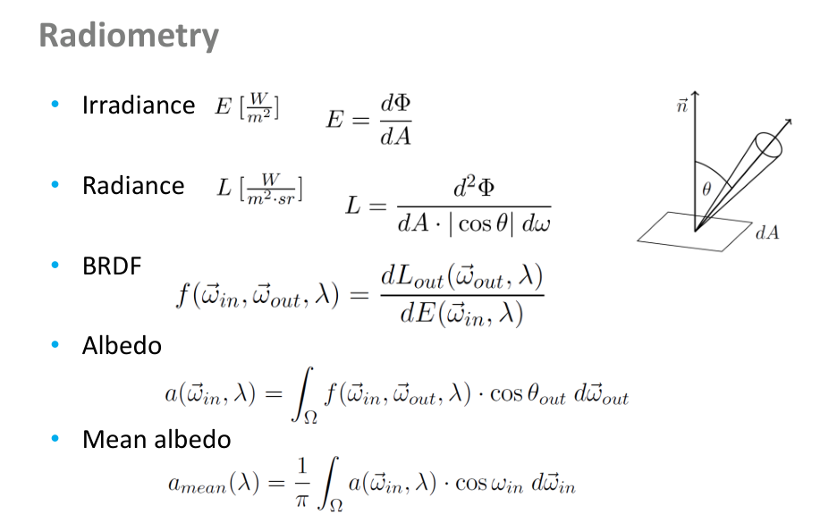
Jiří Filip · datum podkladu neuvedeno · PDF, strana 14
Radiometry: physical constraints Helmholtz reciprocity: fᵣ(ωᵢ, ωₒ) = fᵣ(ωₒ, ωᵢ). Energy conservation: ∫Ω⁺ fᵣ(ωᵢ, ωₒ) cos θₒ dωₒ ≤ 1. Isotropy: invariance to simultaneous rotation of the incoming and outgoing directions around the normal. Původní snímek · 15 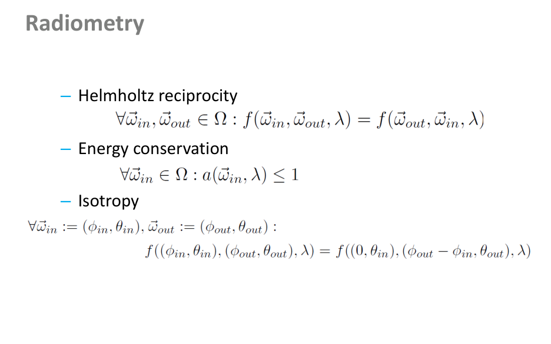
Jiří Filip · datum podkladu neuvedeno · PDF, strana 15
Bidirectional reflectance distribution function fr (ωi , ωo ) = dLo (ωo ) / dEi (ωi )
Source/sensor direction reciprocity. Energy conservation: reflected fraction between 0 and 1. Non-negativity. Původní snímek · 16 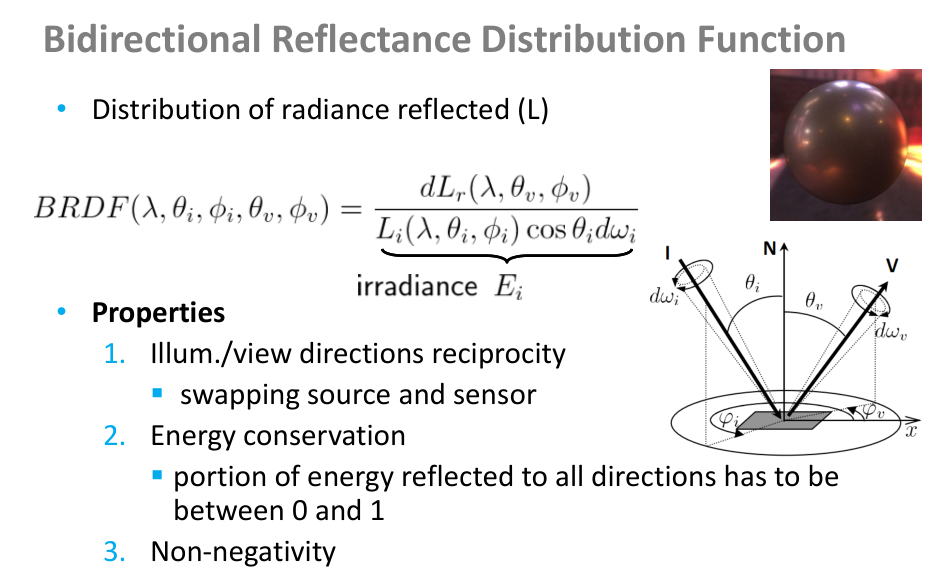
Jiří Filip · datum podkladu neuvedeno · PDF, strana 16
Isotropic and anisotropic BRDF Reflectance depends on illumination and viewing directions. Isotropic BRDF uses the azimuth difference. Anisotropic appearance also depends on material orientation. Původní snímek · 17 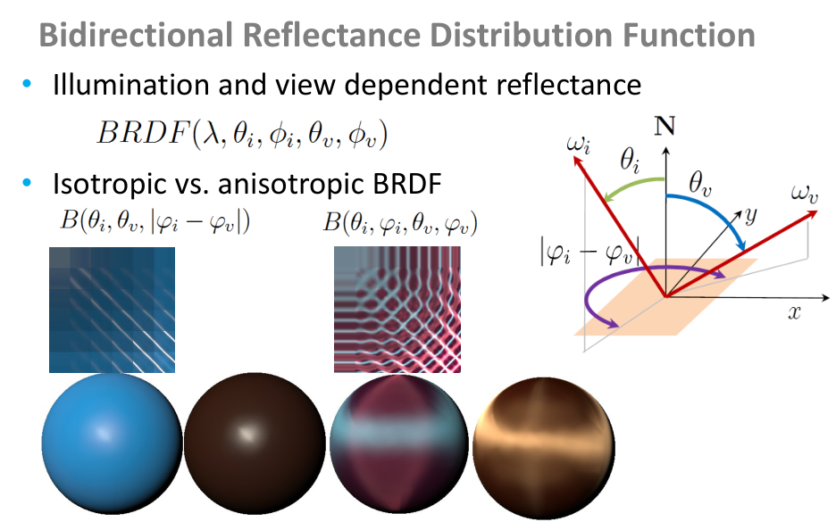
Jiří Filip · datum podkladu neuvedeno · PDF, strana 17
Bidirectional texture function BTF is a texture dependent on illumination and viewing directions. Captures inter-reflections, subsurface scattering, local masking and shadowing. Thousands of images per material; data may occupy gigabytes. Compression and modelling are necessary. Interaktivní ukázka GRAFIT Původní snímek · 18 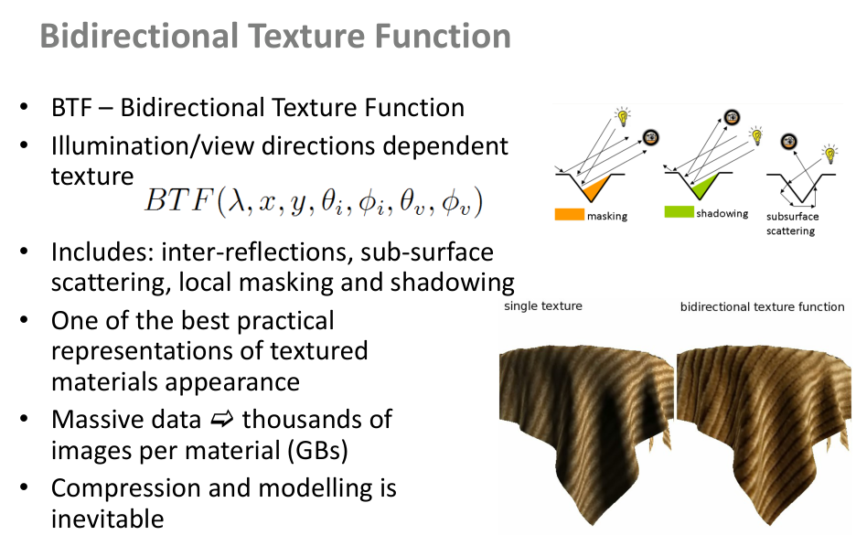
Jiří Filip · datum podkladu neuvedeno · PDF, strana 18
BTF: directional appearance of fabric The source shows a fabric sample and its directional appearance on a rendered shape.
Původní snímek · 19 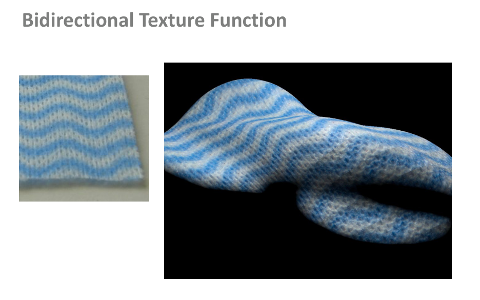
Jiří Filip · datum podkladu neuvedeno · PDF, strana 19
BRDF versus BTF Compare the author’s rendered examples. BTF retains spatial and angular effects that a homogeneous BRDF cannot describe.
Původní snímek · 20 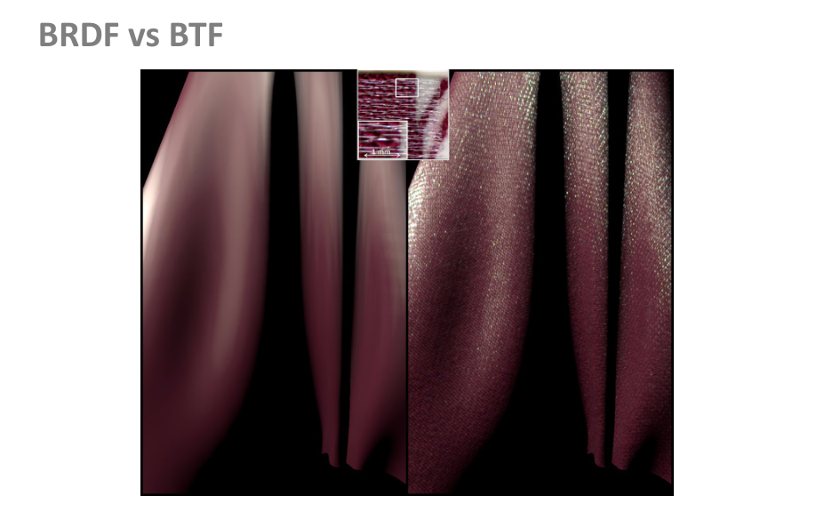
Jiří Filip · datum podkladu neuvedeno · PDF, strana 20
BTF versus spatially varying BRDFs Captured spatial/angular reflectance → pixel-wise apparent BRDF. Estimate SVBRDF / PBR parameter maps. The diagram presents decreasing storage size and visual fidelity along this approximation pipeline. Původní snímek · 21 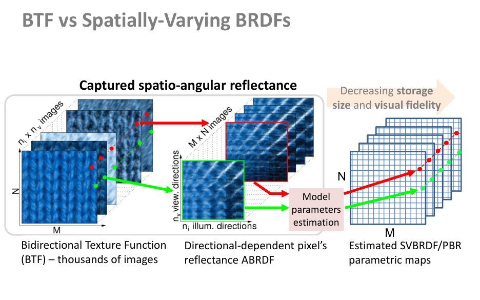
Jiří Filip · datum podkladu neuvedeno · PDF, strana 21
BTF: views and occlusion Rough structures create pixel-wise misalignment between different views. Occlusion changes which surface detail is visible. The source proposes processing individual views separately. Původní snímek · 22 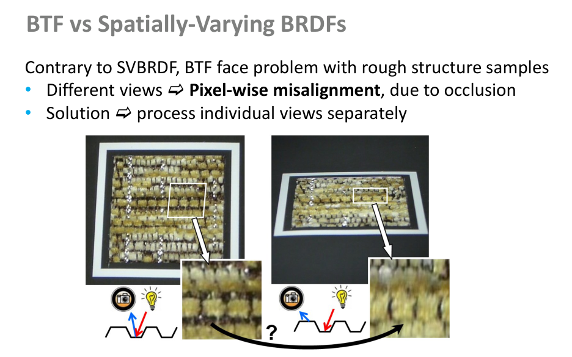
Jiří Filip · datum podkladu neuvedeno · PDF, strana 22
BRDF versus a pixel’s apparent BRDF A pixel’s apparent reflectance includes visibility and structure effects. The author contrasts homogeneous BRDF samples with spatially varying measured appearance.
Původní snímek · 23 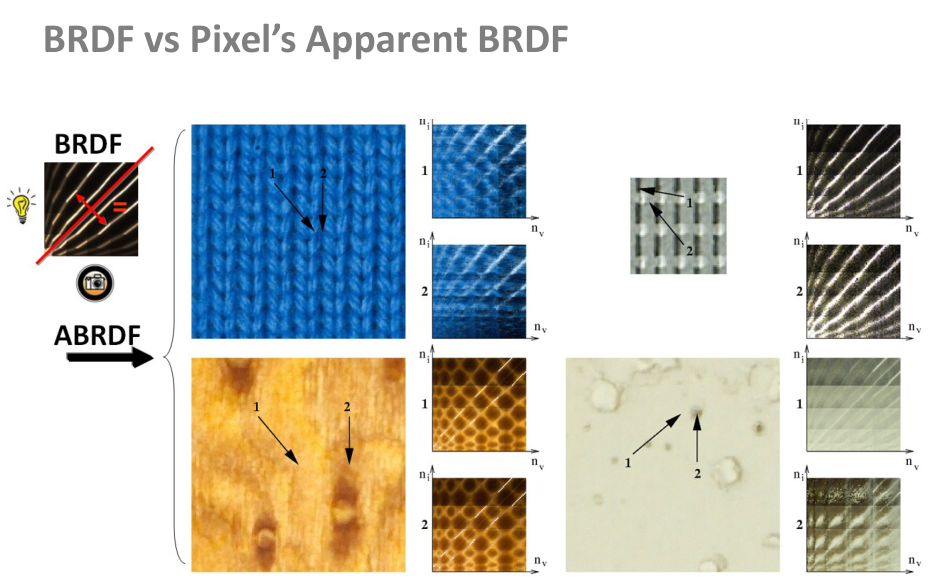
Jiří Filip · datum podkladu neuvedeno · PDF, strana 23
Spatially varying BRDFs Restrictions: opaque surfaces, no subsurface scattering. Nearly flat surfaces: no occlusion/masking and no interaction between pixels. Simpler local transport allows spatial clustering and sparse measurements. Examples: lacquered wood and wallpaper. Původní snímek · 24 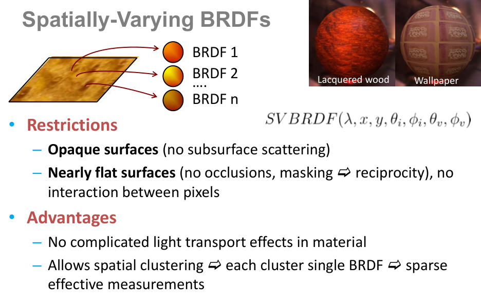
Jiří Filip · datum podkladu neuvedeno · PDF, strana 24
Challenge: semitransparent materials Subsurface transport matters: the source shows light spreading in a semitransparent object.
Původní snímek · 25 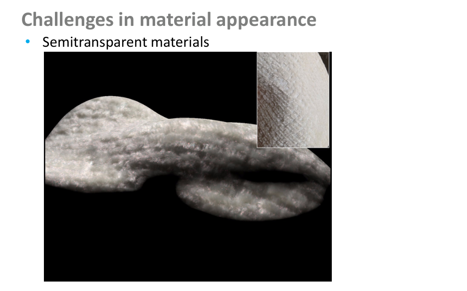
Jiří Filip · datum podkladu neuvedeno · PDF, strana 25
Challenge: anisotropic materials Directional fibres, weaving patterns and surface finishing change appearance with orientation.
Původní autorská ilustrace / diagram, PDF strana 26
Původní snímek · 26 Jiří Filip · datum podkladu neuvedeno · PDF, strana 26
Anisotropy on a complex shape The author’s example illustrates a strongly directional highlight on a rendered draped surface.
Původní autorská ilustrace / diagram, PDF strana 27
Původní snímek · 27 Jiří Filip · datum podkladu neuvedeno · PDF, strana 27
Challenge: textured specular materials Fine structure and directional highlights interact. The source compares three appearances of the same object.
Původní autorská ilustrace / diagram, PDF strana 28
Původní snímek · 28 Jiří Filip · datum podkladu neuvedeno · PDF, strana 28
Textured specular appearance The source illustration shows a narrow highlight and spatially structured appearance on elongated objects.
Původní autorská ilustrace / diagram, PDF strana 29
Původní snímek · 29 Jiří Filip · datum podkladu neuvedeno · PDF, strana 29
Challenge: sparkle in effect coatings Small bright features create sparkle. Compare the source’s appearance examples.
Původní autorská ilustrace / diagram, PDF strana 30
Původní snímek · 30 Jiří Filip · datum podkladu neuvedeno · PDF, strana 30
Challenge: color-shifting materials Compare photographs with a measured and rendered BTF. Colour changes with illumination/view configuration.
Původní autorská ilustrace / diagram, PDF strana 31
Původní snímek · 31 Jiří Filip · datum podkladu neuvedeno · PDF, strana 31
… and their combinations Material appearance can combine spatial structure, specularity, anisotropy, transmission and colour shifts.
GRAFIT · kontrolní otázka Které vlastnosti by jednoduchá barevná textura nebo homogenní BRDF v této ukázce ztratily?
Původní autorská ilustrace / diagram, PDF strana 32
Původní snímek · 32 Jiří Filip · datum podkladu neuvedeno · PDF, strana 32
Interaktivní ukázka GRAFIT ×
Porovnejte jednoduchý Lambertův model s paměťovými nároky měřeného BTF.
GRAFIT · syntetický doplněk. fᵣ = ρ/π sr⁻¹; při normalizovaném kolmém osvětlení E₀ = 1 W/m² je Lₒ = ρ cos θ / π W/(m² sr). RGB8 BTF: strana² × 3 × směry² bytů, bez komprese. Lambertův model nezahrnuje lesk, texturu, anizotropii, stíny ani podpovrchový rozptyl; plné BTF se zde nerenderuje.